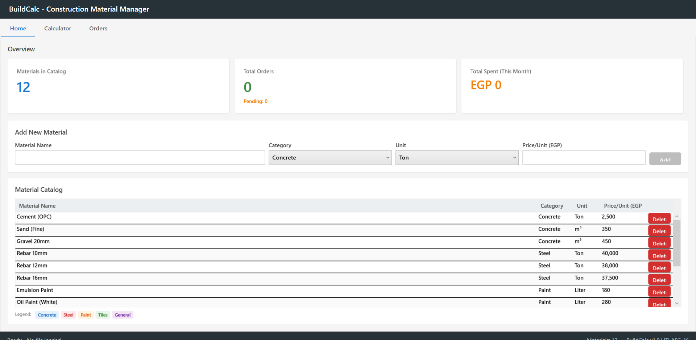
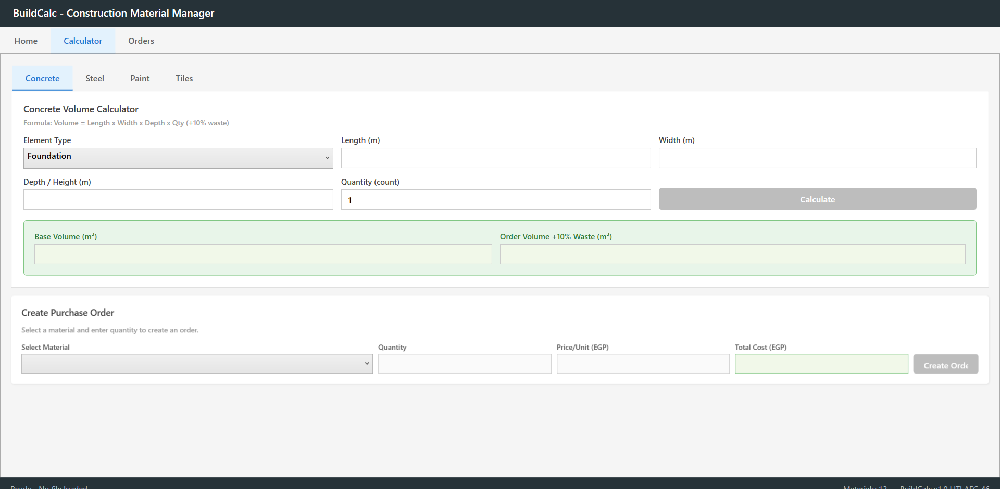
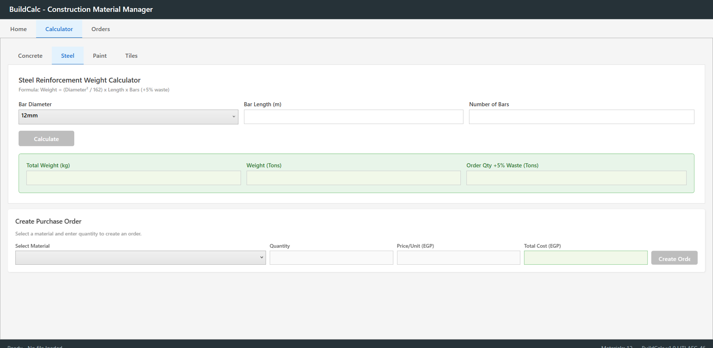
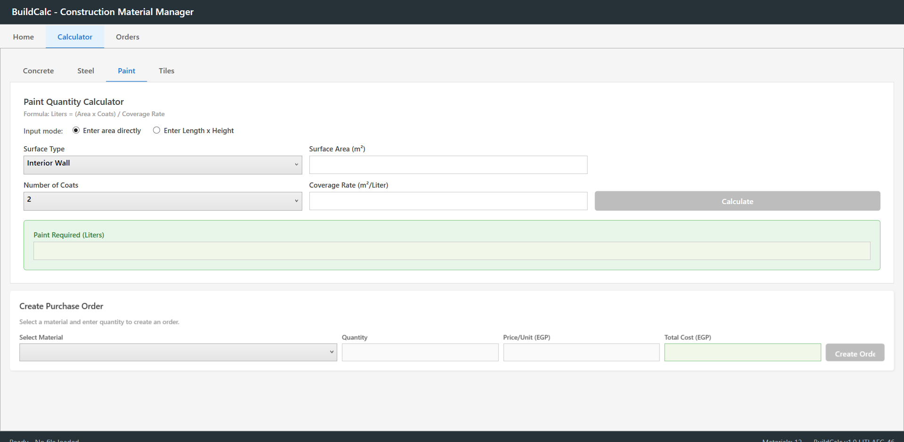
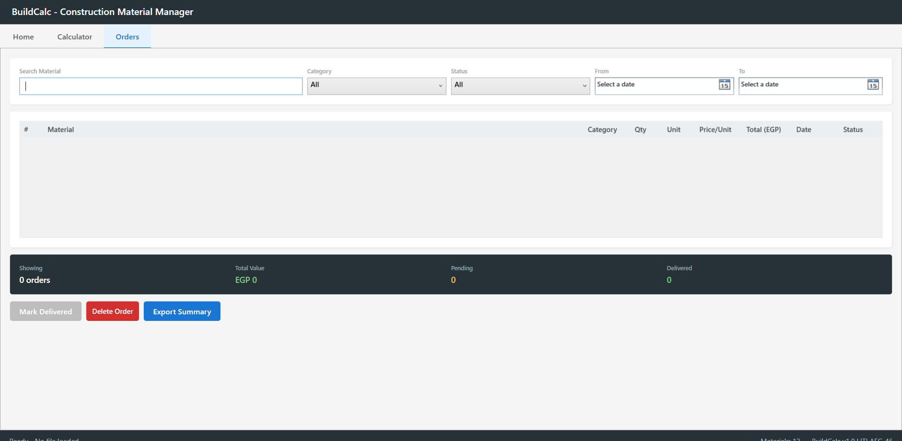
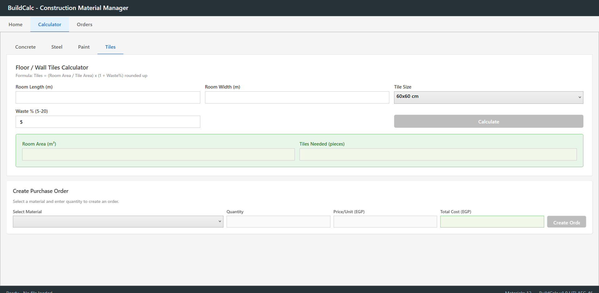

A desktop construction material manager — the first program I ever shipped, and the one that convinced me estimating belonged in code, not spreadsheets.

A material catalog holds 12 items across five categories — Concrete, Steel, Paint, Tiles, and General — each with a unit and a price per unit in EGP. New materials can be added or removed from the home dashboard, which also tracks total orders and total spend for the month at a glance.
Concrete, Steel, Paint, and Tiles each get a purpose-built calculator with the formula shown up front — volume from length × width × depth, reinforcement weight from bar diameter and count, paint from area and coverage rate, tiles from room area and tile size — each with its own waste allowance built in.




Every calculator feeds directly into a Create Purchase Order panel — pick the material, the calculated quantity carries over, price per unit is pulled from the catalog, and total cost is computed before the order is created. No re-typing numbers between a takeoff and a purchase order.
An Orders view lets you search by material, filter by category, status, and date range, and see totals for value, pending, and delivered orders at once. Orders can be marked delivered, deleted, or exported as a summary — the paper trail a small site office actually needs.

Before BuildCalc, I was estimating material quantities by hand, the way most site engineers do — a formula on paper, a lookup in a price list, a manual order. Building this app was the first time I turned that routine into software: real formulas an engineer would recognize, a real catalog with real Egyptian market prices, and an order workflow that closes the loop instead of leaving numbers stranded in a spreadsheet. It's a small tool, but it's the one that pointed me toward AEC software as a discipline.